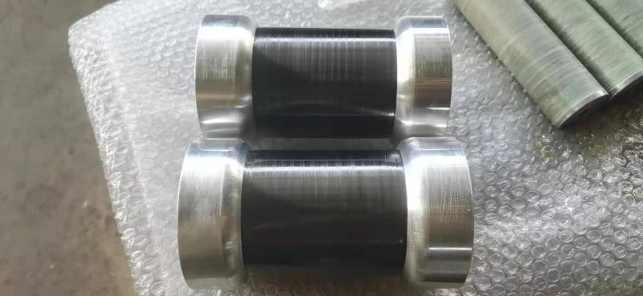
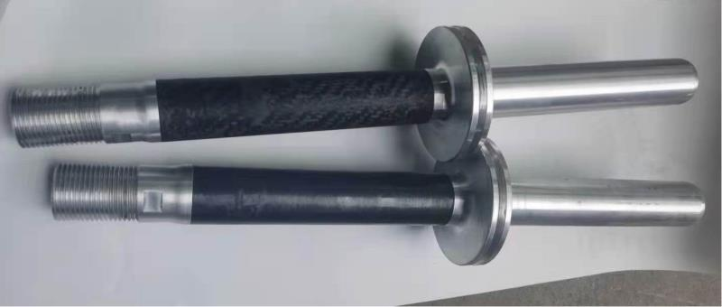
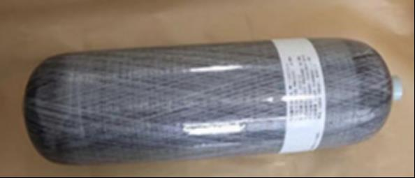

1. 产品一：纤维缠绕 XXXX 筒

碳纤维玻璃纤维XXXX筒具有轻质、高强、耐高温、耐腐蚀和良好的透波性等优点，广 泛应用于军事领域。本公司生产的XXXX筒采用碳纤维或玻璃纤维(高度透波性)缠绕成型， 端部金属接头与碳纤维或玻璃纤维一体化成型，产品外表面喷漆。一般工作压强为 3~10MPa。已经应用于军工研究所，先进的生产工艺降低了成本，使得客户获益良多，严格 的质量管理体系以及详细的产品使用、维护培训，确保用户使用方便、安全。
本公司有一支由多名硕士博士组成的复合材料研发团队，结合先进的生产工艺，可以满 足用户个性化需求，生产出用户需求的同类复合材料缠绕制品。该技术可以应用于石油化工 管道以及高铁领域。
2. 产品二：XXXX 燃烧室
该类型的 XX 燃烧室主要应用于小型导弹，爆破压强 35Mpa，采用碳纤维缠绕工艺制作 而成，该燃烧室两头金属件分别与 XX 和 XXX 连接，XX 燃烧室金属与复合材料连接部分采 用一体化缠绕成型，具有轻质、高强和高可靠性等优点。
小型 XX 燃烧室采用复合材料缠绕工艺，大大降低了其消极质量，提高了 XX 的有效射 程和有效载荷，为 XX 性能的提升发挥了重要作用。该工艺可以应用于石油化工管道领域、 钻杆和提油杆，力学性能可以根据用户需求进行定制化设计，尤其是其抗压、抗拉和内压性 能可以根据用户需求参数设计调整设计和工艺参数，满足各种用户的产品使用需求。
3. 产品三：XXXXX 壳体
XXXXX 壳体采用碳纤维缠绕工艺制作而成，具有轻质、高强、耐高温、高可靠性以及 力学性能可以定制化设计等优点，广泛应用于各种类型的 XXXXXX 推进系统领域。其爆破 压强、裙抗轴拉和轴压性能均与缠绕工艺参数相关，均可定制化设计。该类型 XXXXX 壳体 一般由绝热层、碳纤维缠绕层、复合材料裙以及 XX 四部分组成。我公司采用先进的有限元 法分析技术，对缠绕工艺参数以及固化工艺参数进行了优化设计，确保在满足用户技术参数 要求的情况下，生产出的 XXXXX 壳体具有质量轻、性能达标和可靠性强的特点。目前已经 有多家军工研究所单位长期采购我公司 XXXXX 壳体，用户反应良好，建立了长久的合作关 系。
4. 产品四：XXXXX 燃烧室
XXXX 燃烧室既是 XXX 燃烧室也是发动机壳体的组成部分。是 XXXX 壳体的重要组成 部分，我公司根据客户给定的技术要求参数优化设计缠绕工艺参数，生产出质量轻、强度刚 度高的 XXXXX 燃烧室。前后金属接头用于连接喷管和级间舱段，金属接头采用缠绕一次成 型，连接强度高，可靠性好。支持各种类型尺寸的 XXXXXX 壳体定制生产。
5. 产品五：碳纤维活塞和碳纤维缸筒系列
 碳纤维活塞和碳纤维缸筒具有轻质、高强和自润滑的特点，广泛应用于特种设备，相较 于同类型金属件具有良好耐磨性的特点。同类型产品支持定制化生产。
6. 产品六：高速列车用碳纤维上导杆
上导杆用于高速列车受电弓结构上，采用碳纤维材料制作而成，两端用金属接头连接， 连接强度高，重量可靠性好，具有良好的抗拉性能，抗扭性能，抗弯性能，抗拉强度可以达 到 32000N，可以支撑列车 300KM 时速运转下不发生打的变形，使用寿命 5 年。目前我公司 是该类产品唯一供应商。
7. 产品七：高压储氢气瓶系列产品
目前我公司成产的 III 型铝合金内胆碳纤维缠绕气瓶具有质量轻、承受内压高和耐腐蚀等 特点。目前在国家大力推动下，纤维缠绕储氢气瓶行业取得了长足的进展，我公司也根据响 应国家号召，开发了针对储氢气瓶相应的生产工艺技术，该气瓶爆破内压 35MPA~75MPA 均 可设计生产。
8. 产品八：碳纤维缠绕鞭天线
XX 舰船用碳纤维缠绕天线具有轻质、耐腐蚀、高抗弯等众多优异性能，广泛应用于 XX 舰船上，该天线采用碳纤维缠绕工艺制作而成，两端具有金属接头和透波天线罩，保证了甲 方的使用要求。同类型缠绕支持定制化设计制造。